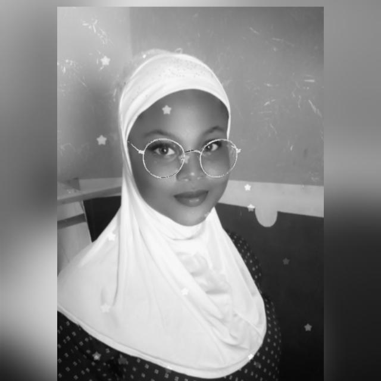

MY ACHIEVEMENT
My name is saad aishat,i went to fgco odogbolu i was a social prefect girl during my ss3 and i was also the assistant class captain.
I started learning tailoring at the age of 15years,and at the age of 25 i did freedom from where i went tailoring so as at that
time i became a boss on my own.at 2014 i got an admission into kwara state polytechnic where i did my national diploma[ND] where i studied
public administration and i finished my ND at the year 2016/2017.and after completing my ND i took another jamb which i applied for admission at KWASU
and at the year 2018 i got an admission into kwara state university,malete[kwasu].
where i was given an admission to study library and information science although the course i applied for was public administration but
unfortunately i was given library and information science which at first i wanted to reject the admision but i thought it could be an oppotunity for me to
learn more.
Right before i got an admission into kwasu,while i was doing my tailoring work i began selling my clothes and i also started
Socially,my life has been full of fun,i have been to all the five yoruba state in nigeria,osun,ogun,lagos,ekiti and ilorin,and have been to most of their
attractive locations,like olumo rock of ogun state,ile ife of osun,national museum of lagos state,ikogosi warm spring of ekiti state, e.t.c.
Lastly,i have also travelled to the federal capital territory,abuja.These are few of my achievement.
Here is a link to my page
Go back to the Homepage